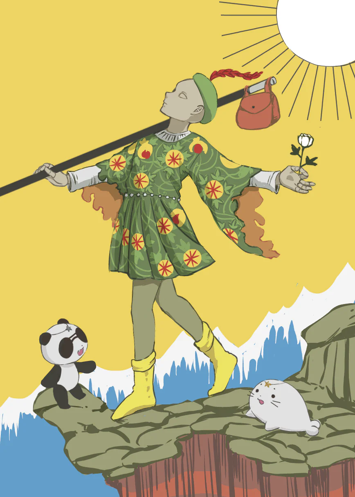
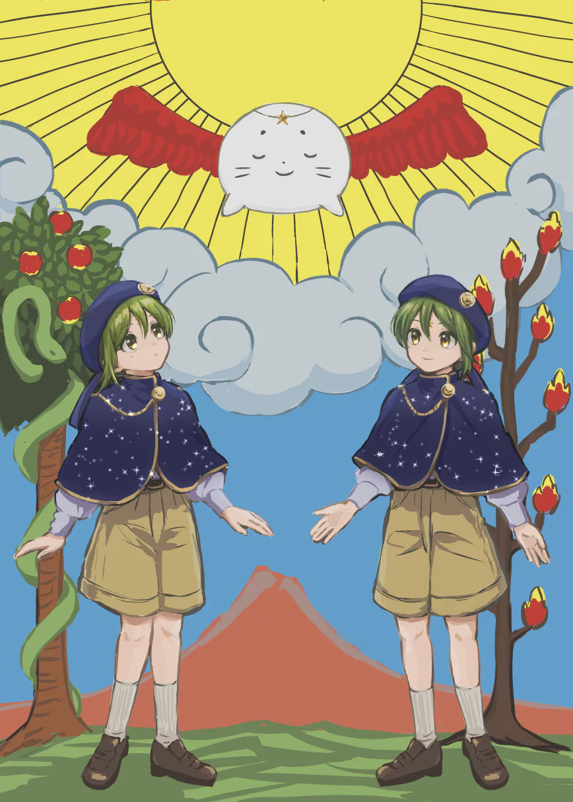
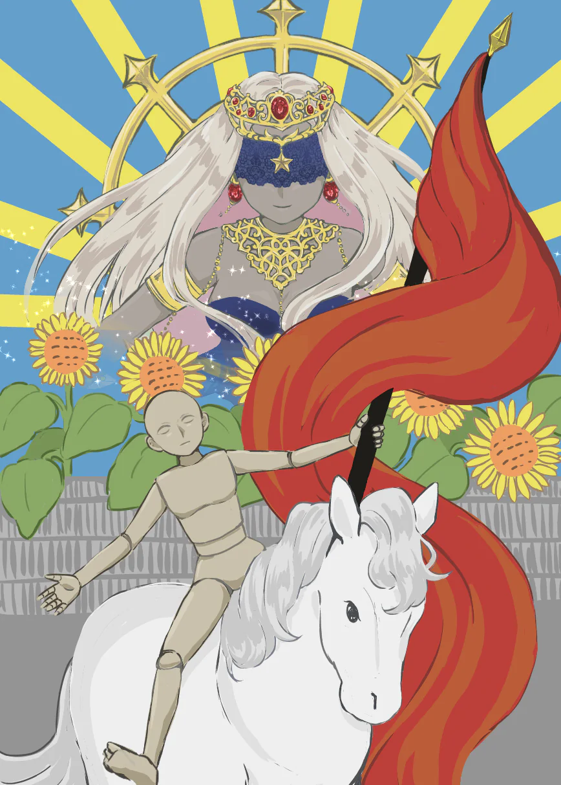

01 / TAROT CARD制作中
しろてんタロット
魂とふたつの世界を描く、タロットカード。



ABOUT
自分のことを知る。
自分で考え、選んで、やってみる。
人生実験は、自分自身を実験台にしながら、さまざまなことを試していく活動です。
その過程で得た気づきや経験をもとに、誰もが自分自身と向き合い、自分で人生を選び、行動するきっかけとなるツールや作品をつくっています。
CONTENTS
魂とふたつの世界を描く、タロットカード。



人間として生きる日々の考えや気づきを綴るnote。
noteを読む ↗自分の現在地を数値化して次のアクションに繋げるチェックツール。
過去を振り返りながら、未来を設計し続けるための記録表。
自分と向き合う、問いと小さな行動のカード。
作品や活動を、少しずつ更新していきます。